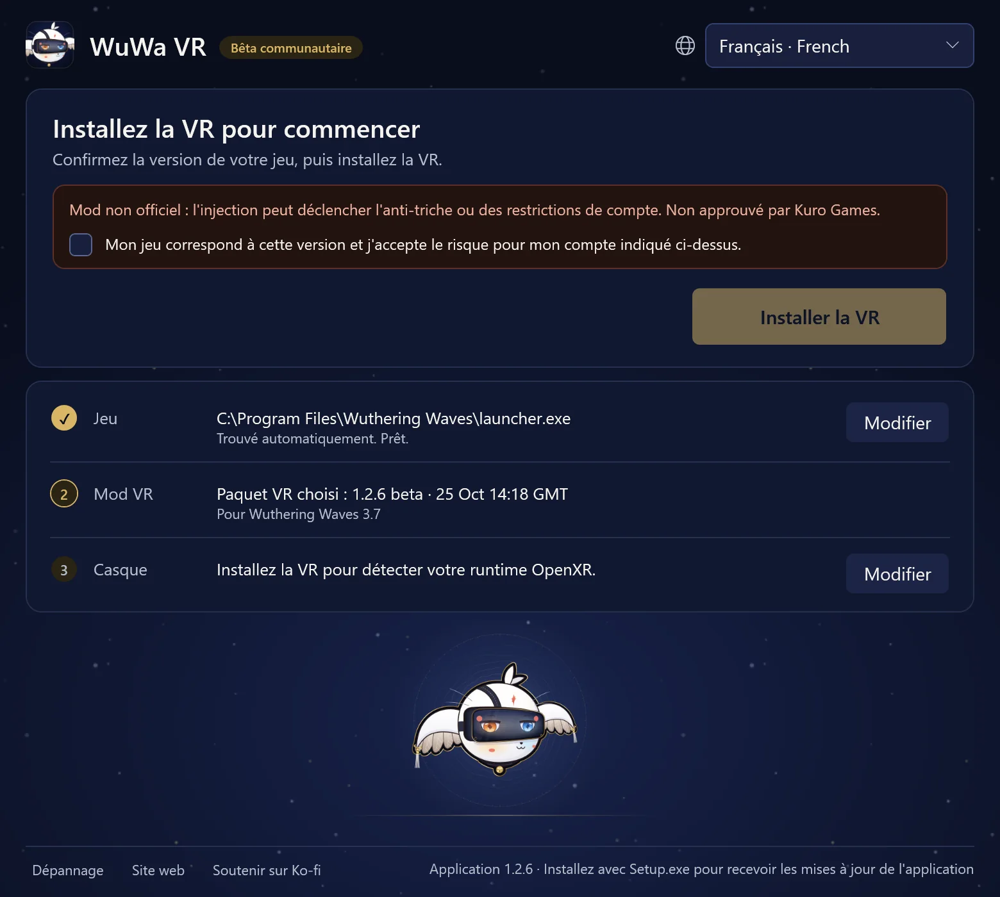
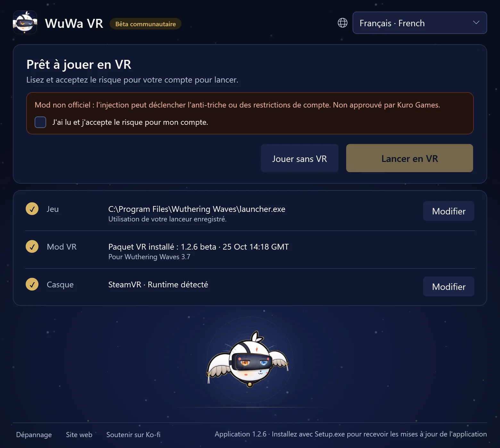
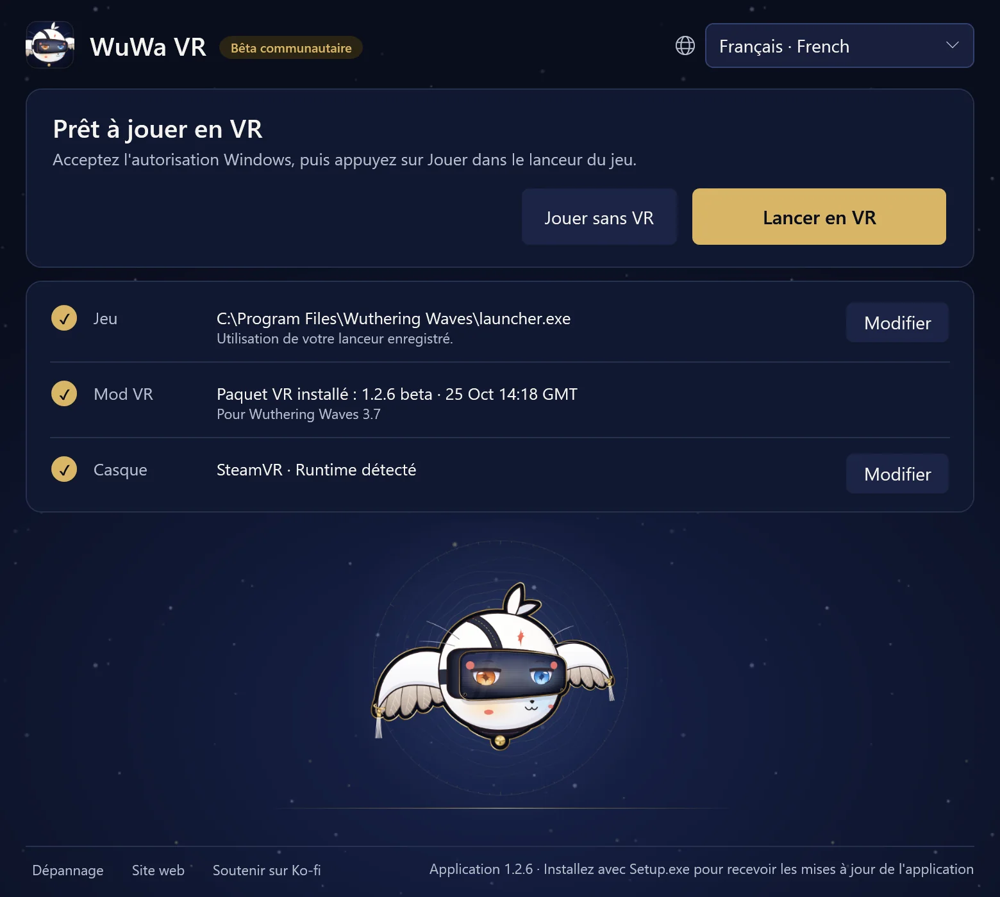

Bêta communautaire
Entrez dans Wuthering Waves
Un mod VR gratuit, fait par des fans, pour Windows. Parcourez Solaris-3 à taille réelle avec le suivi de la tête, un corps en vue à la première personne et des raccourcis manette. Basé sur UEVR de praydog.
1.2.6 · Wuthering Waves 3.7
À voir en VR
De vraies images du casque, enregistrées avec le mod. Les vidéos de l'histoire sont en 3D : ouvrez-les dans l'application YouTube de votre casque pour voir la profondeur.
She eats the apples mid-juggle 🍎 Wuthering Waves in VR (3D)Sans spoilers
Une vidéo ne se charge depuis YouTube (youtube-nocookie.com) que lorsque vous la choisissez.
Toutes les vidéos et Shorts sur YouTube@chronohax7186Afficher les vidéos de l'histoire 3.7 (spoilers)
Toute l'histoire de la 3.7 en quatre parties, plus le final en 25 minutes. Contient des spoilers.
The Wuthering Waves 3.7 finale in 25 minutes, in VR (3D)
I played the Wuthering Waves 3.7 story in VR (Part 1)
Suoming, up close in VR | Wuthering Waves 3.7, Part 2 (3D)
Face to face with Hsin in VR | Wuthering Waves 3.7, Part 3 (3D)
Wuthering Waves in VR: Part 4, the Waking Moon Festival (3D)
Installez, puis Lancer en VR
Le lanceur tient sur un seul écran : un titre qui indique la suite, Lancer en VR et Jouer sans VR, puis votre Jeu, le Mod VR et le Casque. Vos choix sont mémorisés, et ni Python ni autre outil n'est nécessaire.
Installer
Lancez WuWa-VR-Setup.exe, puis ouvrez WuWa VR depuis le menu Démarrer. La première installation du mod VR nécessite Internet.
Régler une fois
Le lanceur trouve votre copie Steam ou du lanceur officiel Kuro. Lisez l'avertissement sur le risque pour le compte et choisissez Installer la VR. Epic n'est pas encore pris en charge.
Lancer en VR
Démarrez le logiciel de votre casque, ou choisissez le simulateur inclus sous Casque. Choisissez Lancer en VR et acceptez l'autorisation Windows ; quatre étapes simples vous mènent en VR.






Écrans réels du launcher, générés par l'application en français. Vos chemins et votre runtime seront différents.
En jeu, L3 + R3 ouvre le menu WuWa VR. Les réglages complets d'UEVR se trouvent sur sa page Menu : All settings (classic UEVR menu). Guide complet d'installation, de mise à jour et de dépannage
Fait pour jouer, pas seulement pour regarder
VR stéréo et suivi de la tête
Une vraie profondeur dans les casques OpenXR. Menus et HUD restent utilisables, et l'interface peut être déplacée, redimensionnée ou masquée.
Pensé pour la manette
Raccourcis pour Xbox, PlayStation (expérimental), manettes VR et clavier. Maintenez L3 ou LT + RT : une carte montre le rôle de chaque bouton.
Corps à la première personne
Voyez les mains et la tenue de votre personnage, tête masquée. Suivi de l'animation en option, avec un mode confort intégré.
Caméras libres
Caméra libre, drone, avion et acrobaties pour explorer et prendre des captures. Expérimental.
Fenêtre 6DOF
Un mode fenêtre facultatif qui place le jeu dans votre pièce. Adapté du travail d'Elliott Tate.
Les deux yeux concordent
Arbres lointains, objets et éclairage indirect concordent dans chaque œil : le monde forme une seule scène.
La première personne, jusqu'à l'animation d'attente
Baissez les yeux : votre personnage est là, avec ses mains, sa tenue et ses animations d'attente, à taille réelle. Masquez les os de la tête pour garder le corps, ou suivez l'animation complète pour une vue plus vivante.
Enregistrez vos propres clips en haute résolution (en anglais)Pas à pas : première personne, image propre et enregistreur intégré.Raccourcis manette
La plupart des raccourcis sont L3 plus un bouton : maintenez le stick gauche enfoncé, appuyez sur le bouton, puis relâchez tout. Dans la VR, maintenez L3 ou LT + RT une demi-seconde et cette carte apparaît sous votre regard.

- LTFenêtre du portail
- LBMode HUD / souris
- ViewPremière personne
- Croix directionnelle ↓Première personne : animation complète
- RTDiorama (10×)
- RBCaméra du jeu / fixe
- MenuGarder cette carte ouverte
- Y/XCaméra haut / bas
- BAfficher / masquer l’interface
- ARecentrer la vue
- R3Menu WuWa VR
Gestes
- R3×2Caméra libre
- L3×2Capture d'écran
- LT+RT→R3Clic : VR complète / écran stéréo
- LT+RT→R30.8 sMaintenir : théâtre mono oui / non
- LT+RT→L3Clic : flou oui / non
- LT+RT→YAppuyer : masquer les personnages devant vos yeux
chronohaxx.github.io/wuwa-vr
La prise en charge PlayStation est expérimentale.
Questions
Quels casques fonctionnent ?
WuWa VR utilise OpenXR. Il a été joué sur un Bigscreen Beyond via SteamVR, et sur un Quest Pro via SteamVR et via Virtual Desktop, avec une manette Xbox. Les autres casques OpenXR devraient aussi fonctionner. Le simulateur fourni permet de l'essayer sur un écran plat.
Steam, launcher Kuro ou Epic ?
Steam et le launcher officiel de Kuro sont pris en charge. Epic ne l'est pas encore.
Mon compte peut-il être restreint ?
Oui, c'est possible. Le mod est injecté dans le jeu et l'anti-triche peut le détecter. Kuro Games ne l'a pas approuvé. Lisez l'avertissement avant d'installer.
Windows avertit à propos de l'installateur. Est-ce normal ?
L'installateur n'est pas signé, donc SmartScreen peut afficher un avertissement. Téléchargez-le uniquement depuis la version GitHub du projet et comparez la somme SHA-256. Ne désactivez jamais l'antivirus ni l'anti-triche.
Comment fonctionnent les mises à jour ?
L'application recherche ses propres mises à jour et demande avant de redémarrer. Si elle démarre avec le jeu fermé, elle installe d'elle-même un paquet VR plus récent pour votre version du jeu, et Utiliser la version installée précédente dans Dépannage → Plus d'options ramène à l'ancien.
Mes fichiers de jeu sont-ils modifiés ?
Non. Le launcher ne touche pas aux fichiers du jeu ; le mod VR est injecté au lancement.
Comment désinstaller ?
Utilisez Dépannage → Plus d'options → Préparer la désinstallation dans l'application, puis supprimez WuWa VR dans Paramètres Windows → Applications. Vos réglages UEVR reviennent à leur état d'avant le mod ; les sauvegardes et enregistrements sont conservés tant que vous ne les supprimez pas.
C'est gratuit ?
Oui. C'est un projet de fans gratuit et le launcher est open source sous licence MIT. Le soutien sur Ko-fi est facultatif et n'achète aucune garantie.
Limites connues
- Certains chargements de scènes et de dialogues peuvent se bloquer, et les menus plats peuvent afficher un arrière-plan en mouvement.
- L'actualisation du format du HUD n'est pas fiable ; une partie de l'éclairage des PNJ, des reflets et du brouillard reste à tester.
Open source, téléchargements vérifiables
Le launcher de bureau est open source sous licence MIT et nos modifications du mod sont publiques. Chaque version est livrée avec le code source correspondant et des sommes SHA-256.
Construit sur le travail de la communauté
WuWa VR repose sur le travail de praydog et des contributeurs d'UEVR, de mirudo2 (polar), SannpoKun, Indath, endlessfalls et Elliott Tate.
Crédits et licences (en anglais)Soutenir sur Ko-fiParticiper aux améliorations